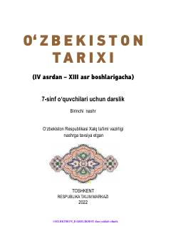

7O7-sinf o'quvchilari uchun Vatanimizning IV-XIII asrlar tarixi bo'yicha rasmiy darslik.
Mazkur darslik umumiy o'rta ta'lim maktablarining 7-sinf o'quvchilari uchun mo'ljallangan bo'lib, IV asrdan XIII asr boshlarigacha bo'lgan Vatanimizning o'rta asrlar tarixini yoritadi. Unda qadimgi Turon hududidagi ilk, rivojlangan va so'nggi o'rta asrlardagi siyosiy, iqtisodiy hamda madaniy jarayonlar bayon qilingan. Shuningdek, xalqimizning boy madaniy merosi va jahon sivilizatsiyasiga ulkan hissa qo'shgan buyuk ajdodlarimiz haqida qimmatli ma'lumotlar berilgan.